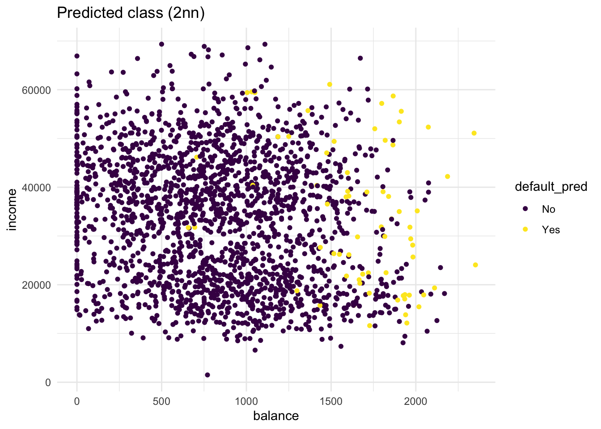

library(MASS)
library(magrittr)
library(class)
library(ISLR)
library(tidyverse)
library(caret)Exercise C
Introduction
In this practical, we will focus on two different classification methods: K-nearest neighbours and logistic regression.
One of the packages we are going to use is class. For this, you will probably need to install.packages("class") before running the library() functions. ISLR is also a new package, that needs to be installed to access the Default data.
Before starting with the exercises, it is a good idea to set your seed, so that (1) your answers are reproducible and (2) you can compare your answers with the answers provided.
set.seed(45)Default dataset from package ISLR
The default dataset contains credit card loan data for 10 000 people. The goal is to classify credit card cases as yes or no based on whether they will default on their loan.
- Create a scatterplot of the
Defaultdataset, wherebalanceis mapped to the x position,incomeis mapped to the y position, anddefaultis mapped to the colour. Can you see any interesting patterns already?
ISLR::Default %>%
arrange(default) %>% # so the yellow dots are plotted after the blue ones
ggplot(aes(x = balance, y = income, colour = default)) +
geom_point(size = 1.3) +
theme_minimal() +
scale_colour_viridis_d() # optional custom colour scaleIt is clear that people with a larger remaining balance are more likely to default. When you look carefully, you may be able to identify two clusters in the data. One cluster for lower incomes and one cluster for higher incomes. The probability to default follows the same pattern in both clusters: higher remaining balance means an increase in probability to default.
- Add the line
+ facet_grid(cols = vars(student))to the plot. What do you see?
Default %>%
arrange(default) %>% # so the yellow dots are plotted after the blue ones
ggplot(aes(x = balance, y = income, colour = default)) +
geom_point(size = 1.3) +
theme_minimal() +
scale_colour_viridis_d() +
facet_grid(cols = vars(student))Clearly, if we facet the plot over students and non-students, we see that the lower income group is well-represented by the students.
- Transform “student” into a dummy variable using
ifelse()(0 = not a student, 1 = student). Then, randomly split the Default dataset into a training settrain(80%) and a test settest(20%).
# Create train/test split
trainIndex <- createDataPartition(Default$default, p = .8, list = FALSE)
Default %<>%
mutate(student = ifelse(student == "Yes", 1, 0))
train <- Default[trainIndex, ]
test <- Default[-trainIndex, ]K-Nearest Neighbours
Now that we have explored the dataset, we can start on the task of classification. We can imagine a credit card company wanting to predict whether a customer will default on the loan so they can take steps to prevent this from happening.
The first method we will be using is k-nearest neighbours (KNN). It classifies datapoints based on a majority vote of the k points closest to it. In R, the class package contains a knn() function to perform knn.
- Create class predictions for the test set using the
knn()function. Usestudent,balance, andincome(but no basis functions of those variables) in thetraindataset. Setkto 5. Store the predictions in a variable calledknn_5_pred.
knn_5_pred <- knn(
train = train %>% select(-default),
test = test %>% select(-default),
cl = as_factor(train$default),
k = 5
)The knn_5_pred object contains the predictions for the test data column default. These predictions are obtained by applying the knn() function on the train set. To be able to generate predictions, the knn() has been given the true classes/values (cl) from the training data set. The knn() function has not seen the true classes for the `test set.
- Create two scatter plots with income and balance as in the first plot you made. One with the true class (
default) mapped to the colour aesthetic, and one with the predicted class (knn_5_pred) mapped to the colour aesthetic.
Hint: Add the predicted class knn_5_pred to the test dataset before starting your ggplot() call of the second plot. What do you see?
# first plot is the same as before
test %>%
arrange(default) %>%
ggplot(aes(x = balance, y = income, colour = default)) +
geom_point(size = 1.3) +
scale_colour_viridis_d() +
theme_minimal() +
labs(title = "True class")# second plot maps pred to colour
bind_cols(test, default_pred = knn_5_pred) %>%
arrange(default) %>%
ggplot(aes(x = balance, y = income, colour = default_pred)) +
geom_point(size = 1.3) +
scale_colour_viridis_d() +
theme_minimal() +
labs(title = "Predicted class (5nn)")From these plots it is clear that there are quite some misclassifications. Many No predictions with Yes as true values, and vice versa.
- Repeat the same steps, but now with a
knn_2_predvector generated from a 2-nearest neighbours algorithm. Are there any differences?
knn_2_pred <- knn(
train = train %>% select(-default),
test = test %>% select(-default),
cl = train$default,
k = 2
)
# repeat the second plot from the previous exercise on the new knn predictions
bind_cols(test, default_pred = knn_2_pred) %>%
arrange(default) %>%
ggplot(aes(x = balance, y = income, colour = default_pred)) +
geom_point(size = 1.3) +
scale_colour_viridis_d() +
theme_minimal() +
labs(title = "Predicted class (2nn)")
Compared to the KNN (K=5) model, more people get classified as Yes. Still, the KNN (K=2) model is far from perfect. t
Confusion matrix
The confusion matrix is an insightful summary of the plots we have made and the correct and incorrect classifications therein. A confusion matrix can be made in R with the confusionMatrix() function from the caret package.
confusionMatrix(knn_2_pred, test$default)Confusion Matrix and Statistics
Reference
Prediction No Yes
No 1885 46
Yes 48 20
Accuracy : 0.953
95% CI : (0.9428, 0.9618)
No Information Rate : 0.967
P-Value [Acc > NIR] : 0.9996
Kappa : 0.2742
Mcnemar's Test P-Value : 0.9179
Sensitivity : 0.9752
Specificity : 0.3030
Pos Pred Value : 0.9762
Neg Pred Value : 0.2941
Prevalence : 0.9670
Detection Rate : 0.9430
Detection Prevalence : 0.9660
Balanced Accuracy : 0.6391
'Positive' Class : No
- What would this confusion matrix look like if the classification were perfect?
If the classification would be perfect, the confusion matrix would be:
Confusion Matrix and Statistics
Reference
Prediction No Yes
No 1933 0
Yes 0 66
Accuracy : 1
95% CI : (0.9982, 1)
No Information Rate : 0.967
P-Value [Acc > NIR] : < 2.2e-16
Kappa : 1
Mcnemar's Test P-Value : NA
Sensitivity : 1.000
Specificity : 1.000
Pos Pred Value : 1.000
Neg Pred Value : 1.000
Prevalence : 0.967
Detection Rate : 0.967
Detection Prevalence : 0.967
Balanced Accuracy : 1.000
'Positive' Class : No
- Make a confusion matrix for the 5-nn model and compare it to that of the 2-nn model. What do you conclude?
confusionMatrix(knn_5_pred, test$default)Confusion Matrix and Statistics
Reference
Prediction No Yes
No 1919 52
Yes 14 14
Accuracy : 0.967
95% CI : (0.9582, 0.9744)
No Information Rate : 0.967
P-Value [Acc > NIR] : 0.5327
Kappa : 0.2838
Mcnemar's Test P-Value : 5.254e-06
Sensitivity : 0.9928
Specificity : 0.2121
Pos Pred Value : 0.9736
Neg Pred Value : 0.5000
Prevalence : 0.9670
Detection Rate : 0.9600
Detection Prevalence : 0.9860
Balanced Accuracy : 0.6024
'Positive' Class : No
The KNN (K=2) model has more true positives (yes-yes) but also more false positives (truly No in the Reference but predicted Yes). Overall the KNN (K=5) model has slightly better accuracy (proportion of correct classifications). However, although this accuracy is higher than if we would randomly assign Yes or No to cases, the performance of the model is identical to the performance when we would hava classified all values as No.
Logistic regression
KNN directly predicts the class of a new observation using a majority vote of the existing observations closest to it. In contrast to this, logistic regression predicts the log-odds of belonging to category 1. These log-odds can then be transformed to probabilities by performing an inverse logit transform:
\[ p = \frac{1}{1+e^{-\alpha}}\], where \(\alpha\) indicates log-odds for being in class 1 and \(p\) is the probability.
Therefore, logistic regression is a probabilistic classifier as opposed to a direct classifier such as KNN: indirectly, it outputs a probability which can then be used in conjunction with a cutoff (usually 0.5) to classify new observations.
Logistic regression in R happens with the glm() function, which stands for generalized linear model. Here we have to indicate that the residuals are modeled not as a gaussian (normal distribution), but as a binomial distribution.
- Use
glm()with argumentfamily = binomialto fit a logistic regression modelfitto thetraindata.
fit <- glm(default ~ ., family = binomial, data = train)Now we have generated a model, we can use the predict() method to output the estimated probabilities for each point in the training dataset. By default predict outputs the log-odds, but we can transform it back using the inverse logit function of before or setting the argument type = "response" within the predict function.
- Visualise the predicted probabilities versus observed class for the training dataset in
fit. You can choose for yourself which type of visualisation you would like to make. Write down your interpretations along with your plot.
tibble(observed = train$default,
predicted = predict(fit, type = "response")) %>%
ggplot(aes(y = predicted, x = observed, colour = observed)) +
geom_point(position = position_jitter(width = 0.2), alpha = .3) +
scale_colour_manual(values = c("dark blue", "orange"), guide = "none") +
theme_minimal() +
labs(y = "Predicted probability to default")
This plot shows the predicted probabilities (obtained with predict(fit, type = "response")) for all the points in the test set. We can see that the defaulting (Yes) category has a higher average probability for a default compared to the No category, but there are still data points in the No category with high predicted probability for defaulting.
One advantage of parametric procedures like logistic regression is that we get parameters (coefficients) we can interpret.
- Look at the coefficients of the
fitmodel and interpret the coefficient forbalance. What would the probability of default be for a person who is not a student, has an income of 40000, and a balance of 3000 dollars at the end of each month? Is this what you expect based on the plots we’ve made before?
coefs <- coef(fit)
coefs["balance"] balance
0.005728527 The higher the balance, the higher the log-odds of defaulting. To be more precise: each dollar increase in balance increases the log-odds of defaulting by 0.0057 Let’s study all coefficients.
coefs (Intercept) student balance income
-1.063443e+01 -7.718385e-01 5.728527e-03 -1.168747e-06 Now, if we would like to calculate the predicted logodds of default for a person who is not a student (0 times the coefficient for student), has an income of 40000 (40000 multiplied with the coefficient for income) and a balance of 3000 dollars (3000 multiplied with the coefficient for balance), we can do the following to calculate the logodds directly:
logodds <- coefs[1] + 0*coefs[2] + 40000*coefs[4] + 3000*coefs[3]We can then convert the logodds to a probability by
1 / (1 + exp(-logodds))(Intercept)
0.9985054 or as
plogis(logodds)(Intercept)
0.9985054 There is a probability of .999 of defaulting. This is in line with the plots we have seen before. this new data point would be all the way to the right.
Visualising the effect of the balance variable
In two steps, we will visualise the effect balance has on the predicted default probability.
- Create a data frame called
balance_dfwith 3 columns and 500 rows:studentalways 0,balanceranging from 0 to 3000, andincomealways the mean income in thetraindataset.
balance_df <- tibble(
student = rep(0, 500),
balance = seq(0, 3000, length.out = 500),
income = rep(mean(train$income), 500)
)- Use this dataset as the
newdatain apredict()call usingfitto output the predicted probabilities for different values ofbalance. Then create a plot with thebalance_df$balancevariable mapped to x and the predicted probabilities mapped to y. Is this in line with what you expect?
balance_df$predprob <- predict(fit,
newdata = balance_df,
type = "response")
balance_df %>%
ggplot(aes(x = balance, y = predprob)) +
geom_line(col = "dark blue", size = 1) +
theme_minimal()Warning: Using `size` aesthetic for lines was deprecated in ggplot2 3.4.0.
ℹ Please use `linewidth` instead.Just before a balance of 2000 dollars in the first plot is where the ratio of defaults vs non-defaults is 50/50. This line is exactly what we would expect.
- Create a confusion matrix just as the one for the KNN models by using a cutoff predicted probability of 0.5. Does logistic regression perform better?
pred_prob <- predict(fit, newdata = test, type = "response")
pred_lr <- factor(pred_prob > .5, labels = c("No", "Yes"))
confusionMatrix(pred_lr, test$default)Confusion Matrix and Statistics
Reference
Prediction No Yes
No 1923 47
Yes 10 19
Accuracy : 0.9715
95% CI : (0.9632, 0.9783)
No Information Rate : 0.967
P-Value [Acc > NIR] : 0.1429
Kappa : 0.3877
Mcnemar's Test P-Value : 1.858e-06
Sensitivity : 0.9948
Specificity : 0.2879
Pos Pred Value : 0.9761
Neg Pred Value : 0.6552
Prevalence : 0.9670
Detection Rate : 0.9620
Detection Prevalence : 0.9855
Balanced Accuracy : 0.6414
'Positive' Class : No
Logistic regression performs better than KNN in every way - at least for our model on this data. Remember that we started with a random seed. Every procedure that uses random numbers thereafter has become seed dependent. This also holds for the train/test split that we realized. A different random split can therefore yield different results. Cross-validation - which I excluded in this practical - can give you an indication of the variance of this difference.
End of Practical